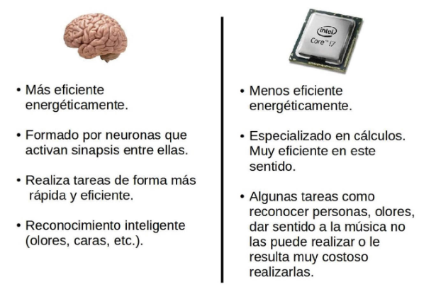

Actualmente, los ordenadores han avanzado mucho y pueden realizar billones de operaciones por segundo; no obstante, no son capaces de reconocer a una persona por su manera de caminar o de reconocer patrones o procesar imágenes, tal y como las procesa un cerebro humano.

Piensa que cuando, en 2012, Google presentó un software capaz de reconocer gatos en vídeos hacían falta 16.000 procesadores para poder ejecutarlo. Tampoco los ordenadores se han mostrado eficientes en el darle sentido a sonidos, música, etc.
El cerebro humano es millones de veces más eficiente en términos de energía que cualquier procesador u ordenador, por lo tanto, si se quiere realizar un microchip eficiente se deberá modificar la arquitectura. Aquí entran en juego los microchips neuromórficos.
Estos procesadores están diseñados de una forma similar al cerebro y se ha demostrado que pueden reducir la potencia necesaria de forma drástica. Esta eficiencia va a poder hacer posible la implantación de microchips en retinas artificiales para personar que sufran algún tipo de ceguera, replicando sensores electrónicos; realizar narices artificiales que puedan reconocer olores; crear sistemas de reconocimiento facial; etc.
El secreto de todo ello radica en cómo está organizado el cerebro para realizar las tareas de forma más rápida y eficiente. El cerebro está formado por neuronas que activan sinapsis o enlaces entre ellas. Dichas activaciones sería el equivalente a ejecutar una instrucción digital. En un segundo un cerebro puede activar diez cuadrillones de conexiones neuronales (1016). Para tener esa capacidad de cálculo, se necesitarían, al menos, un millón de Pentium y unos cientos de megavatios de electricidad.
Actualmente, los ingenieros trabajan replicando microchips que copian la organización y funciones neuronales. Si todos estos estudios tienen éxito, en un futuro se verán muchos chips neuromórficos tratando datos sensoriales y dándoles sentido.